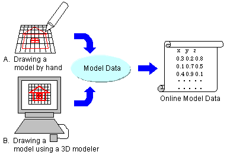
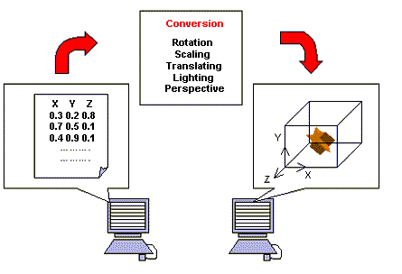
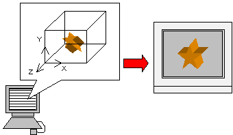

The basic 3D graphics process is a three-step process.
First of all, you need to create the data for the object you want to draw. In general, an object to be drawn in computer graphics is called a model and the set of coordinates and other data belonging to a model is called model data. To create model data effectively, you can use any of the many available 3D graphic tools called 3D modelers.
You can also create model data on graph paper by hand, and then feed it into a computer. However, this method is complicated and requires a lot of work, so it isn't a good way to create a large model.

Next, you need to convert the model data, and place it in the virtual three-dimensional space of the computer. Then provide for the conversion calculations to show rotation, scale, movement, lighting, perspective, and so on. As a result of the conversion calculations, you can display a model that will be viewed from all directions. Moreover, it will be a solid image that has depth as shown by the lighting visual effects.

Finally, you need to send the model data in the virtual three-dimensional space of the computer to the TV screen by way of various software and hardware processes. Ultimately, when the converted model is displayed on a two-dimensional TV screen, the depth (z axis) information is no longer needed. Pixels (picture elements) are displayed on the screen.

Nintendo® Confidential
Copyright © 1999
Nintendo of America Inc. All Rights Reserved
Nintendo and N64 are registered trademarks of Nintendo
Last Updated March, 1999